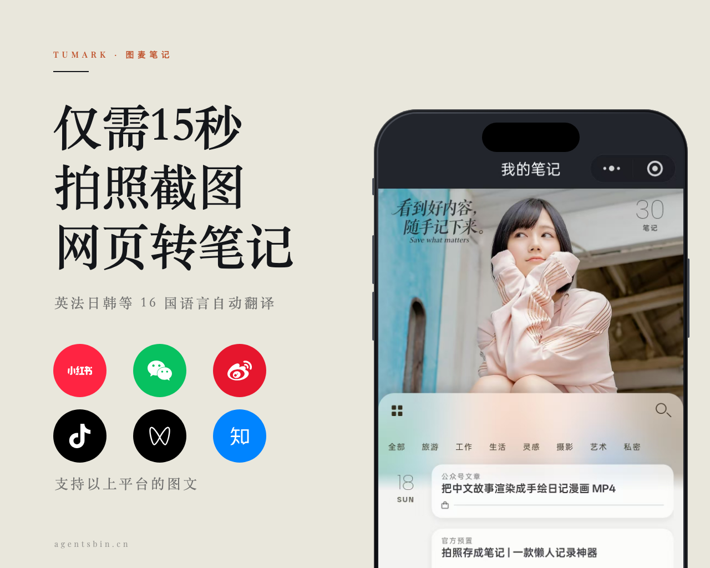
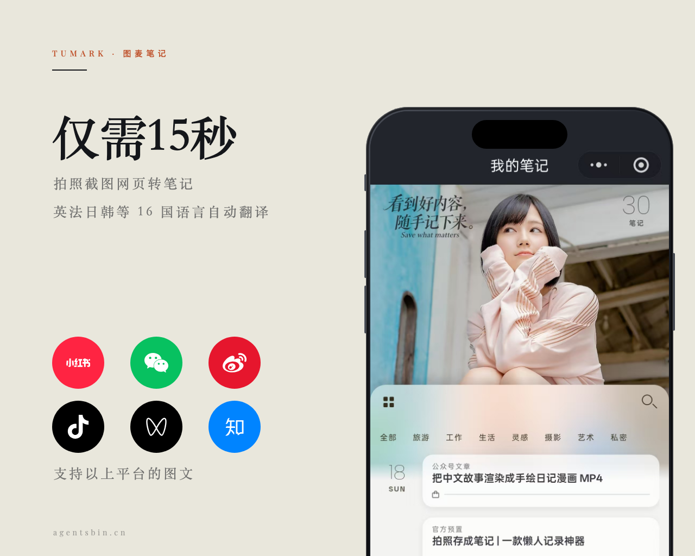
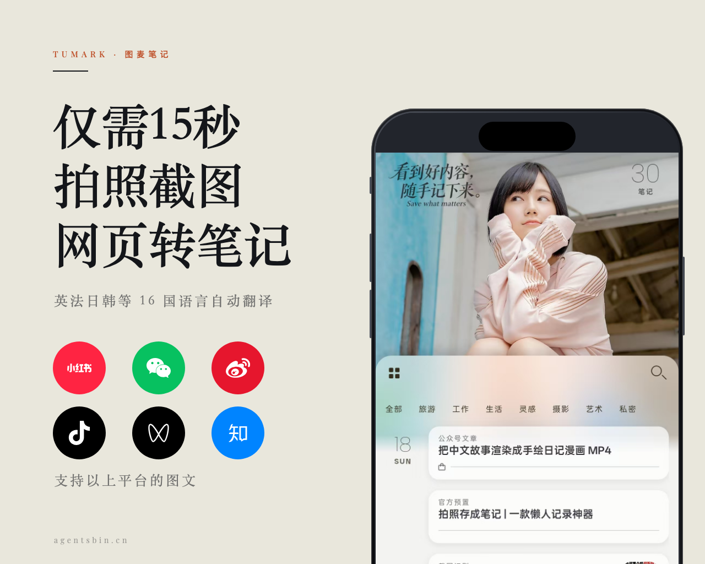
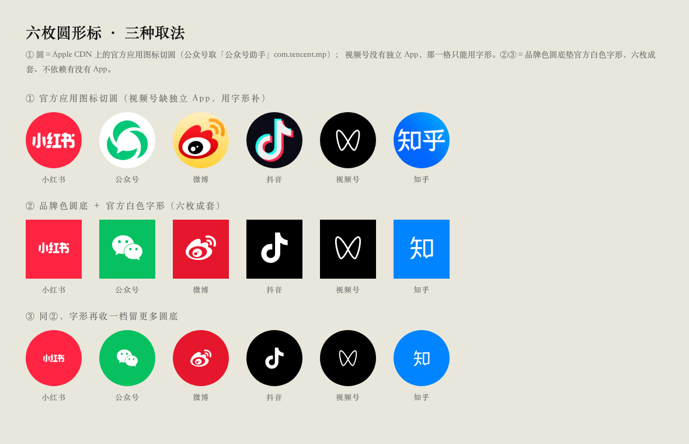

屏内深色带按渲出来的 PNG 逐行采亮度量到 135px（上一版 198px），列表浅底起于屏内 504px ⇒ 列表可见 315px（上一版 252px）。圆标＝品牌色圆底＋官方白字形，六枚直径 96、下面不再挂平台名。q4＝123,965 B（占上限 94.6%）、q5＝112,395 B。
圆标那一档仍等你拍：小红书／抖音／知乎这三枚比甲更像他家常见的样子；但公众号取的是「公众号助手」那枚白底绿旋、在纸色上塌成一圈白，微博那枚自带橙黄渐变、和纸色打架。q4＝128,189 B（离上限只剩 2,883 B）、q5＝115,969 B。

也全是现网字号、没新造一档。代价：副题下面空出 223px 一条，左列断成两截，读起来像没排完。只当备选。q3＝121,988 B 就够、q4＝106,275 B。

屏内深色带只剩 72px（只够放灵动岛），列表浅底起于 441px ⇒ 列表可见 378px，比甲再多 63px、比上一版多 126px。代价：「我的笔记」那行导航被裁掉了，屏上看不出这是哪一屏。q4＝123,064 B、q5＝111,662 B。
